Modulo 1 · Esercizio 3: Gruppi, licenze e utenti guest
Nota
In questo esercizio le password temporanee sono valori di laboratorio: non riutilizzarle in ambienti reali.
Passo 1 · Creazione di USER02 e primo accesso da SEA-DEV2
- 1. Ripartendo dalla VM
SEA-DEV1andare su https://entra.microsoft.com/. - 2. Andare su Users > All Users > Create new user.
- 3. Creare USER02, compilando gli attributi richiesti:
| Campo | Valore |
|---|---|
| Nome visualizzato | User02 |
| Nome utente | User02@XXXXXX |
| Password | TempPassword02! |
| Usage Location | Italy |
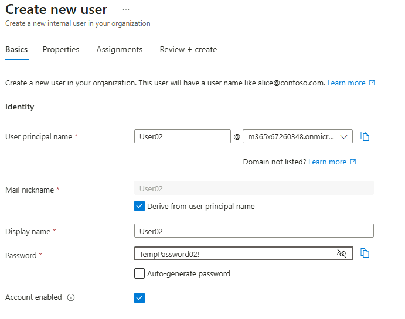
- 4. Accedere alla VM
SEA-DEV2come administrator locale. -
5. Aprire il browser e accedere a
https://portal.office.comvia Web con le credenziali di USER02. -
6. Seguire il flusso guidato al primo accesso:
- Configurazione MFA (es. Microsoft Authenticator), se richiesta dalle policy configurate negli esercizi precedenti.
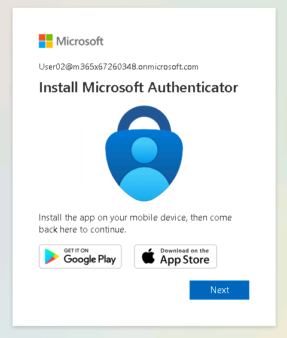
- 7. Cambiare password come da procedura guidata e salvarla.
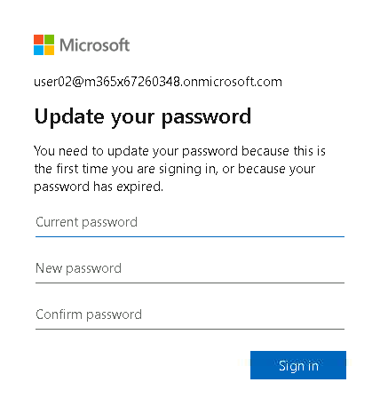
Passo 2 · Creazione di USER03 e primo accesso da SEA-DEV3
- 1. Ripartendo dalla VM
SEA-DEV1andare su https://entra.microsoft.com/. - 2. Andare su Users > All Users > Create new user.
- 3. Creare USER03, compilando gli attributi richiesti:
| Campo | Valore |
|---|---|
| Nome visualizzato | User03 |
| Nome utente | User03@XXXXXX |
| Password | TempPassword03! |
| Usage Location | Italy |
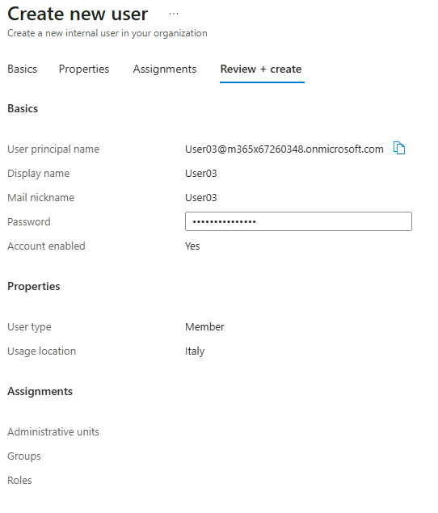
- 4. Accedere alla VM
SEA-DEV3come administrator locale. -
5. Aprire il browser e accedere a
https://portal.office.comvia Web con le credenziali di USER03. -
6. Seguire il flusso guidato di cambio password e configurazione MFA se richiesta.
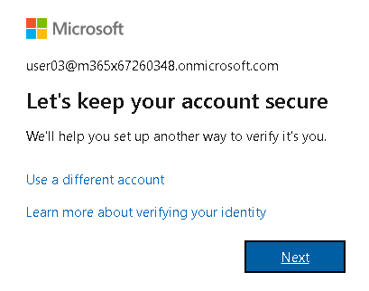
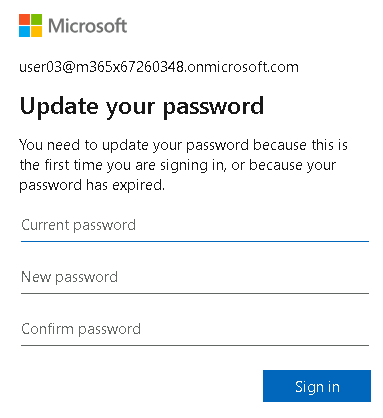
Passo 3 · Creazione del Security Group statico
-
1. Riaprire la VM
SEA-DEV1e recarsi su https://entra.microsoft.com/. -
2. Andare su Groups > All groups > New group
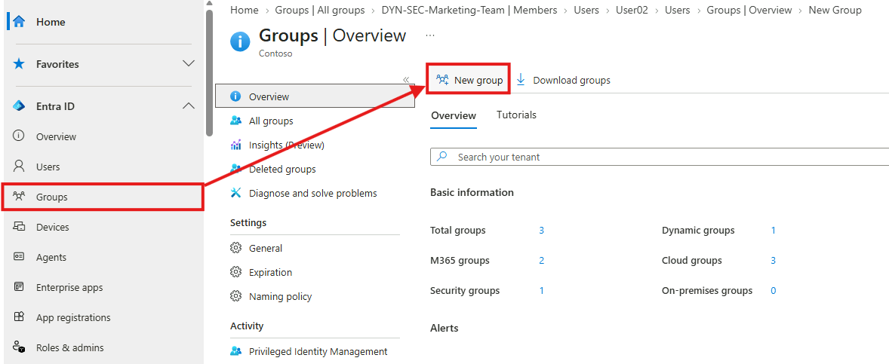
- 3. Configurare il gruppo con le seguenti specifiche:
- 4. Group type:
Security - 5. Membership type:
Assigned(statico). -
6. Group name:
-
7. Group description:
-
8. In Members, aggiungere manualmente:
- User02
- User03
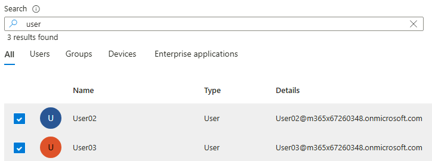
- 9. Selezionare Create per salvare il gruppo.
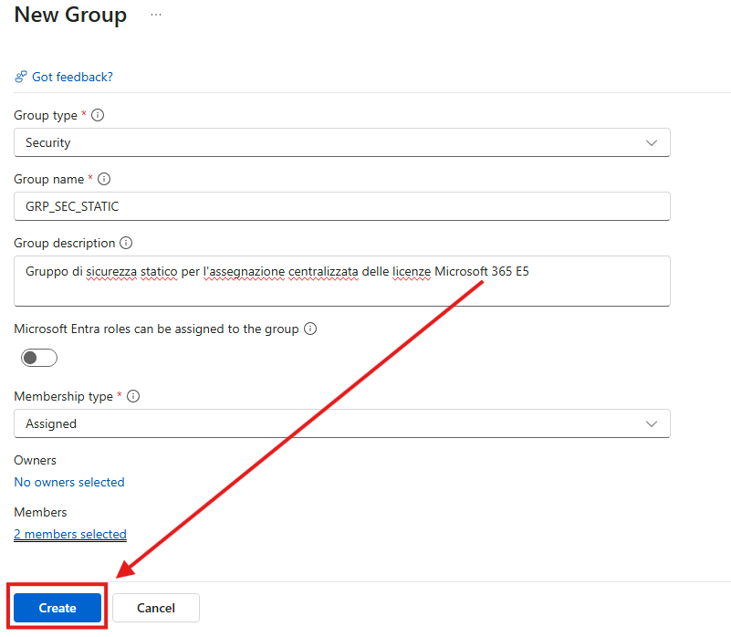
Passo 4 · Assegnazione licenze Microsoft 365 E5 al gruppo
- 1. Andare su https://admin.cloud.microsoft/ , Billing e successivamente Licenses.
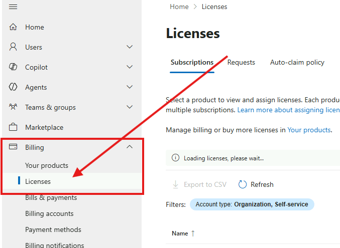
- 2. Selezionare il prodotto Office 365 E5 e premere Assign licenses.
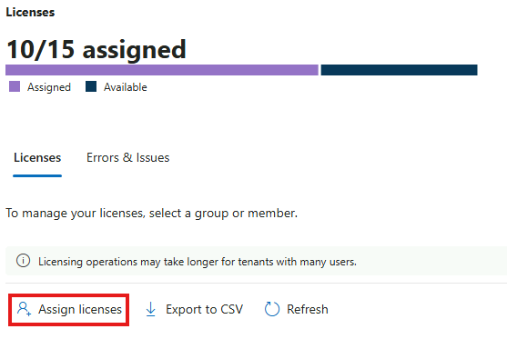
- 3. Aggiungere il gruppo
GRP_SEC_STATICcome destinatario della licenza.
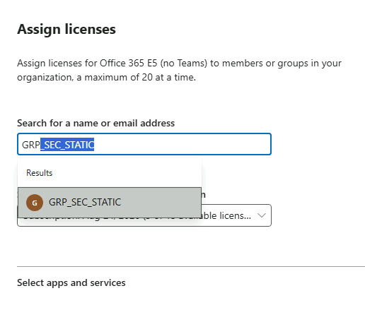
- 4. Confermare l'assegnazione con Assign.
Nota
L'assegnazione tramite gruppo può richiedere alcuni minuti prima che le licenze risultino effettivamente attive sugli account di User02 e User03.
- 5. Ripetere anche per le licenze Microsoft Teams Enterprise.
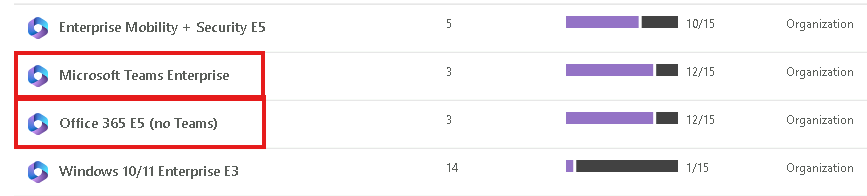
- 6. Controllare che l'assegnazione delle licenze ai due utenti sia andata a buon fine.
Importante
L'assegnazione delle licenze basata su gruppo richiede Microsoft Entra ID P1 (o superiore). Per assegnare licenze è necessario impostare la Usage location dell'utente, altrimenti l'assegnazione fallisce.
Passo 5 · Creazione del gruppo Microsoft 365 (GRP_365_STATIC)
-
1. Tornare su https://admin.cloud.microsoft/ e procedere su Teams & Groups > Active Teams & Groups > Add a Microsoft 365 group con le seguenti specifiche:
-
2. Group name
GRP_365_STATIC - 3. Group description
Gruppo Microsoft 365 statico per collaborazione tra User02 e User03
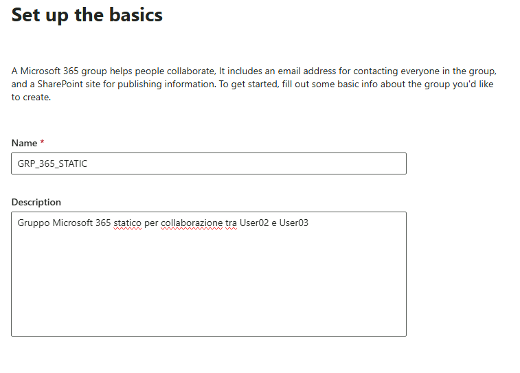
- 4. Inserire User02 come Owner; come Member inserire User02 e User03.
- 5. Come Group mail mettere: GRP_365_STATIC
- 6. Impostare Privacy Private.
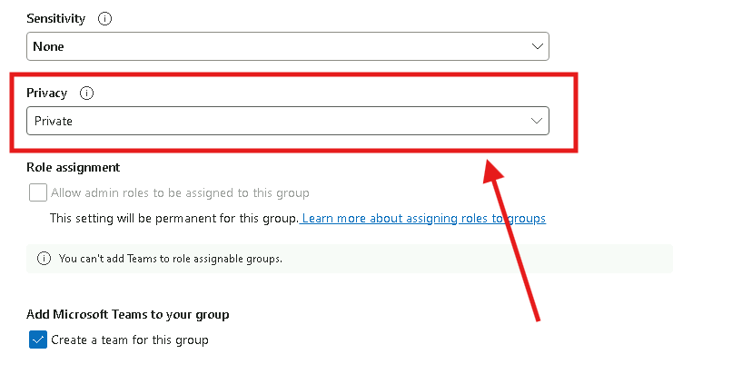
- 7. Selezionare Create Group per salvare il gruppo.
Passo 6 · Verifica lato USER03 (da SEA-DEV3) e invito guest
- 1. Accedere alla VM
SEA-DEV3come administrator locale. -
2. Aprire il browser e accedere a
https://outlook.comvia Web con le credenziali di User03.
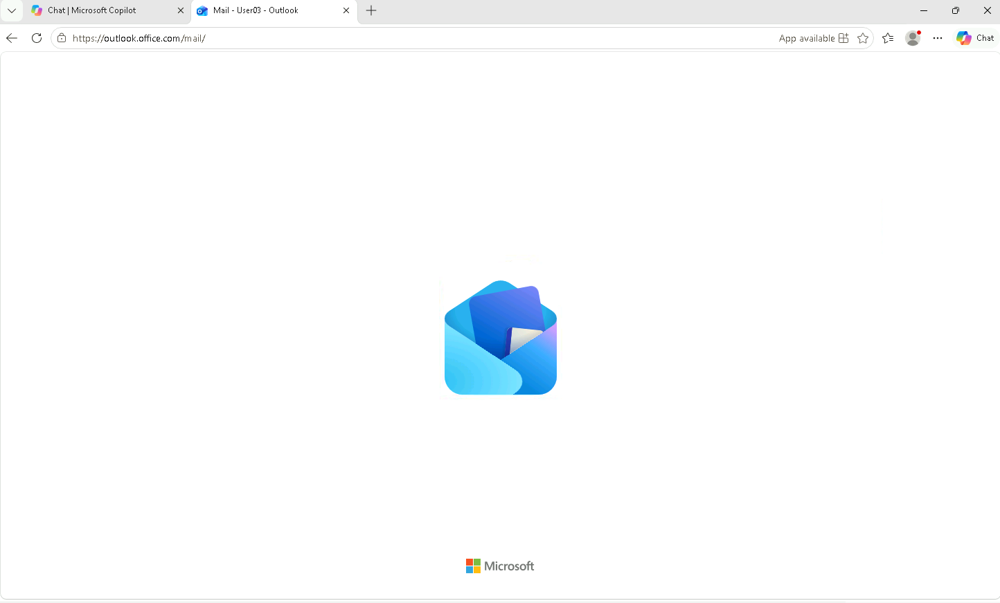
- 3. Verificare che User03:
- Riesca ad accedere alla propria posta e a quella del gruppo GRP_365_STATIC (cartella gruppo in Outlook).
- Abbia un calendario condiviso del gruppo visibile in Outlook.
- Veda il gruppo GRP_365_STATIC tra i gruppi a cui appartiene (barra laterale sinistra).
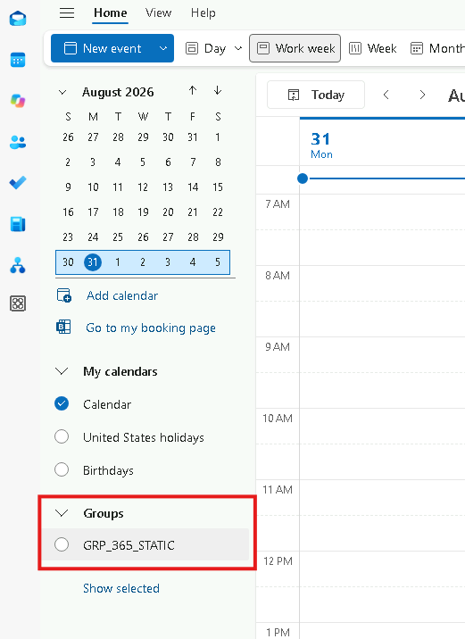
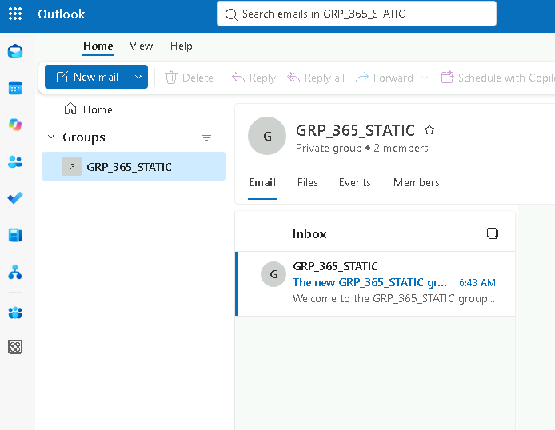
- 4. Dalla pagina del gruppo GRP_365_STATIC di Outlook andare nella sezione Members, selezionare Add members e invitare un guest inserendo il proprio indirizzo email personale, come
personal@xxx.com.
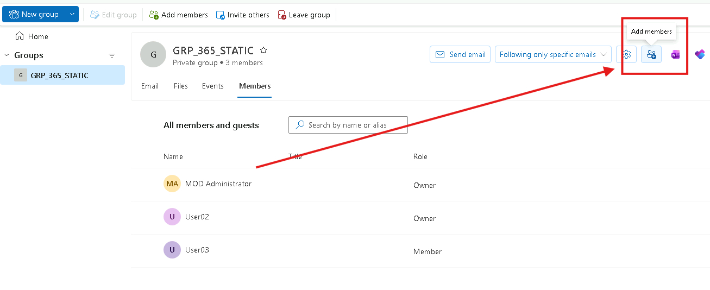
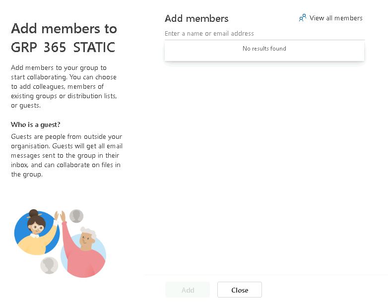
Attenzione
Un membro del gruppo può solo proporre l'aggiunta di un guest: la richiesta deve essere approvata da un owner (vedi Passo 7). Solo l'owner può invitare direttamente utenti esterni (Passo 8).
-
5. Provare ora a invitare Alex Wilber tramite il suo UPN:
Suggerimento
Chi può invitare guest è definito dalle External collaboration settings di Microsoft Entra ID, che si combinano con le impostazioni di condivisione di Microsoft 365 Groups e SharePoint.
Passo 7 · Verifica lato USER02 (da SEA-DEV2): approvazione della richiesta
- 1. Accedere alla VM
SEA-DEV2come administrator locale. -
2. Aprire il browser e accedere a
https://outlook.comvia Web con le credenziali di User02. -
3. Controllare l'arrivo della mail di richiesta e andare sul gruppo.
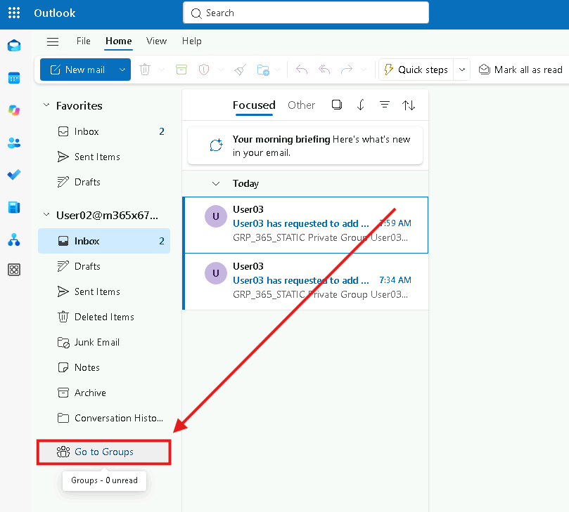
- 4. Verificare l'arrivo di una richiesta di autorizzazione per l'accesso di membro al gruppo (in quanto owner di GRP_365_STATIC, User02 riceve la richiesta di approvazione per l'aggiunta del membri).
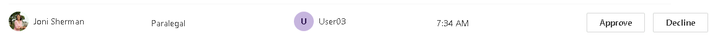
- 5. Autorizzare la richiesta.
Passo 8 · Invitare external users da Owner
- 1. Accedere alla VM
SEA-DEV2come administrator locale. -
2. Aprire il browser e accedere a
https://outlook.comvia Web con le credenziali di User02. -
3. Andare sul gruppo GRP_365_STATIC e andare su members.
-
4. Premere su Add members e invitare una mail personale del tipo:
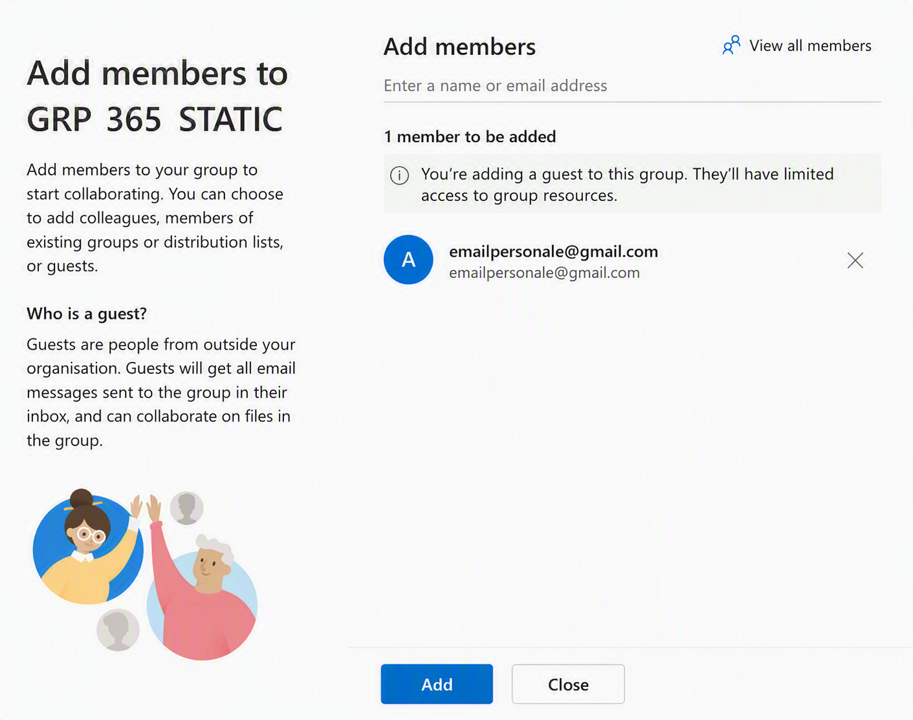
-
5. Sulla casella di posta personale
personal@xxx.com, verificare la ricezione dell'email di invito ("Microsoft Invitations" per conto del tenant). -
6. Aprire l'email e selezionare Accept invitation.
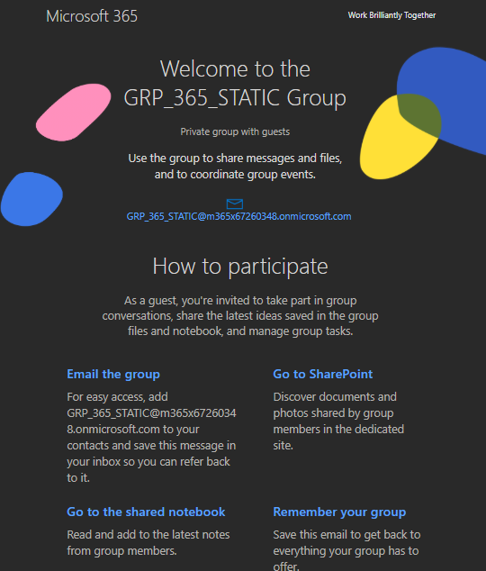
- 7. Accedere con le proprie credenziali (account Microsoft personale o, se non presente, crearne uno seguendo la procedura guidata).
- 8. Completare il consenso alle informazioni richieste dal tenant.
- 9. Se richiesto dalle policy del tenant, configurare la MFA per l'account guest.